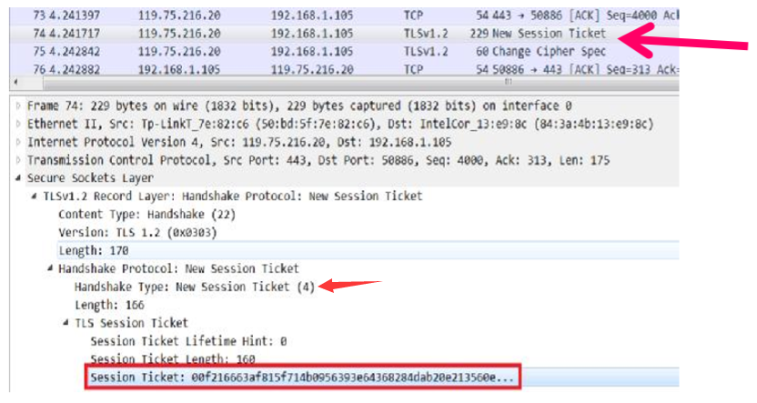

TLS（Transportation Layer Security）是一种传输层协议，他的前身是由Netscape公司设计的SSL（Secure Socket Layer），用于web的安全传输。后被IETF规范化为TLS。
TLS共由5个子协议组成，分别为Handshake protocol、ChangeCipherSpec、Alert protocol、Application data和TLS Record Protocol。他们的关系如下图所示：
TLS Record Protocol
TLS记录协议基于由握手协议协商确定的安全参数对应用数据传输提供保密性和完整性保护。
功能目标
- 消息传输
记录协议传输由上层协议（如handshake protocol）提交给它的数据缓冲区，如果缓冲区超过长度限制（2^14），则需要分片。属于同一协议的小缓冲区也可以组合成单个记录。 - 加密及完整性验证
- 压缩
设计上，加密前应压缩以提高效率，实践中基本没有压缩…… - 拓展性
封装过程
分装总流程分为分片、压缩、加密与消息认证。
分片
1 | //分片结构 |
压缩
1 | //压缩后分片结构 |
安全处理
1 | struct{ |
TLS Handshake Protocol
TLS握手协议协商记录层的安全参数，包括密码套件、Pre master secret和身份认证
交换流程
握手流程如图所示，其中星号代表可选项，方括号表示加密内容，之后会具体解释转换的内容。
封装过程
总体封装过程如图所示，handshake部分前有record层的头部信息包裹。
1 | struct { |
下面介绍body内部结构
HelloRequest
HelloRequest是一个简单的通知，告诉client应该重新开始一个协商过程。作为响应，client应该在合适的时候发送 ClientHello消息。如果client当前正在协商一个会话，则该消息会被忽略
当HandshakeType为HelloRequest时，消息体是空的。也就是说，Handshake只占4个字节。
ClientHello;
在一次新的握手流程中，ClientHello消息总是第一条消息。ClientHello消息将客户端支持的功能和首选项发送给服务器。
1 | struct{ |
使用wireshark，我们可以很明确的看到一个handshake数据包示例
ServerHello
当服务器收到来自客户端的ClientHello消息后，如果它能够找到一套可以接受的算法（即可以就加密算法等取得协商一致），服务器将发送ServerHello消息来响应客户端的ClientHello消息。如果不能找到一套匹配的算法，则服务器将响应handshake failure alert
1 | struct{ |
使用wireshark，我们可以很明确的看到一个handshake数据包示例
Certificate
服务器向客户端发送Certificate消息，使得客户端能够认证服务器的身份。
匿名通信的情况下，服务器不需要发送 certificate消息。内容也较为简单，只有长度和证书。
ServerKeyExchange
服务器发送serverCertificate消息后，立即发送ServerKeyExchange消息（如果是匿名协商，则在ServerHello后立即发送该消息）。同时，仅当serverCertificate消息包含的信息不足以让客户端交换一个pre master secret 时，才发送 ServerKeyExchange 消息。比如：DHE_DSS 、 DHE_RSA、DH_anon。而对于密钥交换算法RSA、 DH_DSS 、 DH_RSA ， 如果发送 ServerKeyExchange消息则是非法。
内容较为多样，只给出一种示例，具体情况具体分析。
CertificateRequest
服务器使用CertificateRequest消息请求对客户端进行身份验证，其中包含了服务器可以接受的证书类型列表，可接受的CA的列表。结构记不住也就算了。
1 | struct { |
ServerHelloDone
服务器发送ServerHelloDone消息来表示ServerHello及相关消息的结束，这些消息用于完成密钥交换，发送该消息后，服务器将等待客户端响应。而客户端收到该消息后，可以继续他的密钥交换阶段。ServerHelloDone消息不包含任何内容。
TLS密码套件
我们来关注一下握手协议中协商的密码套件内容。
TLS涉及到的密码应用有身份认证算法、密钥交换算法、加密算法、MAC算法、PRF和用于Finished消息的散列函数。一套密码套件可以如下表示：TLS_密钥交换算法_认证算法_WITH_对称加密算法_哈希算法，例如：TLS_ECDHE_RSA_WITH_AES_128_GCM_SHA256
所有可用的密码套件IANA(The Internet Assigned Numbers Authority,互联网数字分配机构给出，他们大部分被保留或不安全，常用的安全密码套件只有20多个。
CertificateVerify
只有服务器向客户端发送CertificateRequest消息的情况下，客户端才会向服务器发送CertificateVerify消息，以向服务器证明自己的确持有客户端证书的私钥。
ClientKeyExchange
如果客户端发送了ClientCertificate消息，ClientKeyExchange消息应该在该消息后立即发送。否则，在客户端收到服务器发送的ServerHelloDone后立即发送该消息。结构随使用密码体系变化而变化。下给出一个示例。值得注意的是，在这个示例中展示了record layer如何对同一协议多个小缓冲区组合成单个记录。
1 | struct { |

Finished
发送ChangeCipherSpec来激活已经协商好的密码套件之后，客户端发送Finished消息，表明TLS握手协商完成，相当于告诉服务器“握手结束。”
由于已经完成了密码规格切换，因此Finished消息是使用切换后的密码套件来发送的，也就是Finished消息不是以明文方式发送的，而是通过下层的记录协议进行加密发送。
示例如上个图所示哦（第3个就是Finished消息，但他被加密了）
Finished消息的内容采用PRF函数生成，其输入包括：master_secret,finished_label,之前所有handshake消息组合的hash值。
服务器可以通过对收到的消息进行验证来确认收到的Finished消息是否正确，从而可以确认握手协议是否正常结束，密码套件的切换是否正确（防止降级攻击——攻击者切换弱密码套件）。
TLS ChangeCipherSpec Protocol
此协议用于发送信号给通信对端，表示要切换到新协商确定的密码规格。
内容只占一个字节，如图示例
Alert Protocol
此协议用于传递协议运行过程中出现的警报，Alert消息分两类：警告消息（warning）和致命消息（fatal）。致命消息将导致连接被立即中止，并将与这个连接相关的会话（SessionID）作废，以免这个会话被继续用来建立新的连接。警告消息仅仅是通告对方有关报警信息，不会导致连接的关闭。
1 | struct{ |
Application Data Protocol
此协议给record层提供application data用于传输
传输内容为加密的应用层数据和MAC消息认证码。
TLS的密钥生成
TLS中，需要用到三种密钥：用于消息加密的对称密码密钥、CBC模式的初始化向量、用于消息认证码的密钥。服务端使用的密钥与客户端使用的密钥不同，这代表总共有6组密钥需要生成。
pre_master_secret生成master_secret，master_secret生成所有密钥。整个密钥生成流程如下图所示：
pre master secret
- 如果采用RSA进行密钥协商，client生成一个随机数，在发送ClientKeyExchange消息时用server的公钥加密，发送给server，最后双方均具有这个秘密，即为 pre_master_secret。
- 如果采用DH进行密钥协商，Client在发送ClientKeyExchange消息时，将DH的公开值发送给server。server也会发送一个DH公开值给Client。根据DH算法，最终通信双方获得一个相同的秘密值，即为pre_master_secret。
master secret
master_secret=PRF(pre_master_secret,"master secret“,ClientHello.random+ServerHello.random)[0..47];
- pre_master_secret：来自于handshake阶段，client和server协商出的一个秘密数
- “master secret”：一个常量标签字符串，用于表示所生成数据的使用目的
- ClientHello.random：客户端随机数
- ServerHello.random：服务器随机数
最终生成48字节的master secret
PRF
伪随机数生成器PRF的定义如下：
1 | PRF(secret, label, seed) = P_<hash>(secret, label + seed) |
P_hash是一个数据扩展函数，使用一个hash函数把一个秘密数（secret）和种子（seed）扩展成任意长度的输出。如果需要，P_hash可以迭代足够多次，从而产生足够数量的数据。 比如，如果P_SHA256用于产生80字节数据，则需要迭代3次（直至A(3)），产生96字节输出数据；最后一次迭代生成数据的最后16个字节是多余的，将被丢弃，而保留80字节数据。
key block
最终通信双方产生相同的master secret，且进一步产生相同的keying material，通过相同顺序的切割，最后得到一致的6个密钥。
1 | key_block= PRF(SecurityParameters.master_secret, |
TLS会话恢复
被遗弃的Session ID机制
在ClientHello与ServerHello中，都存在着SessionID字段，其作用就在于恢复一段会话。恢复流程如下：
- ClientHello.SessionID=NULL
- ServerHello.SessionID=NULL：表示将来没有重用该会话信息的意愿
- ServerHello.SessionID=Random()：标识当前会话，客户端保存SessionID及与该会话相关的信息，之后走完握手流程。
- ClientHello.SessionID=SessionID
- ServerHello.SessionID=NULL：表示不匹配或没有重用该会话信息的意愿，之后走完握手流程。
- ServerHello.SessionID=SessionID：匹配成功，然后，客户端和服务器均必须发送ChangeCipherSpec消息且直接继续发送 Finished消息。

问题在于，为每一个客户端创建和维护一个session cache需要大量存储空间；多个服务器之间共享session cache也是个难题。
Session Ticket机制
ticket指的是一个由服务器创建和使用的且受密码学保护的数据结构，服务器使用ticket来重建与特定会话相关的状态。由客户端存储，服务器负责解密验证从而恢复会话
1 | struct{ |
当服务器与客户端支持Session Ticket机制时，handshake的extension中会包含SessionTicket，初始情况下len为0。
服务器发送New Session Ticket数据包，传输Ticket。（Handshake Type为4）如图所示：

注意的是，即使是使用Session Ticket机制，SessionID字段仍会被填充，但这会用于区分服务器是在恢复一个会话还是在进行一次完整的握手协议。